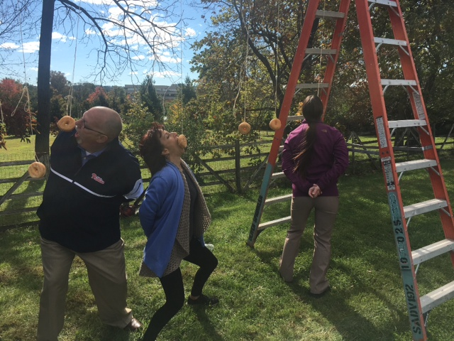

We were delighted to receive this letter in the mail from Logan, who is incarcerated in Kenedy, Texas:
"Thanks to your [program], I was able to get my GED. I want to give all your staff a big shoutout and thank you! Because of y'all sending me a couple study guides and GED testing books, I now have completed the GED test and got my diploma. Thanks for everything. God bless."
The GED preparation book we had sent to Logan had been donated by someone who knew of the need for it as a result of browsing our Amazon Wish List. We are immensely grateful to the donor, and know that Logan is too!
Donated books wouldn't do prisoners any good if they sat in our room in Washington, DC. In order to mail over 6,000 packages of books to prisoners each year, we need money to pay USPS for shipping. Fortunately, we are blessed to have many supporters who donate postage funds. Some donate directly, while others hold creative fundraisers. In this newsletter, we are highlighting some of the fundraisers that have enabled us to mail thousands of book packages.
Every year, Oliver Fire Protection & Security, a company based in King of Prussia, Pennsylvania, holds a month of fundraising activities and donates the proceeds to charity. We were honored to be chosen as the beneficiary for 2018. Employees paid to participate in a variety of activities, and at the end of the month attended a fun-filled Fall Fest. The light-hearted competitions at the Fall Fest included one in which participants had to eat donuts hanging from strings (see photo below).

Oliver Fire Protection & Security also held a book drive for us, resulting in seven boxes of carefully-chosen books. Especially appreciated were some role-playing game (RPG) books, which are in very high demand in prisons. (Participating in RPGs provides prisoners with social interaction, and has been noted to be one of the few activities in men's prisons that is often racially integrated.)
We are very grateful to Oliver Fire Protection & Security for its generosity to us and the prisoners we serve!
Another fun fundraiser was the one held for us by Sticky Fingers Sweets & Eats, a bakery and cafe in the Columbia Heights neighborhood of Washington, DC. As Sticky Fingers' Charity of the Month for April 2019, we received $1 for each almond creme cupcake sold that month.
Cupcakes and other baked goods were also sold in an unrelated bake sale held at Foundry United Methodist Church in May. Our volunteers did the baking for this annual event, and church members flocked to purchase delicious treats.
One day each year, the Connecticut Avenue location of Politics and Prose allows us to table in their store, allowing us to meet lots of book lovers and talk to them about the books we need (many of which are sold at the store). Additionally, if customers mention us at the cash register on that day, we receive 20% of the sale!
In April, our volunteer Amanda shared with us the wonderful news that she had held a readathon, soliciting donations from her Facebook followers for each page read. Showing amazing dedication to BtP, she read for 24 hours, and kept her followers informed of her progress with frequent updates.
In September, a local alternative religious group also held a readathon. Dubbed "Lucre for Literacy", it attracted participants from as far away as Philadelphia. A whopping 1,036 pages were read, and a check was sent to us along with a beautiful card affirming the value of books.
Our program could not operate without space generously provided to us by Foundry United Methodist Church. Foundry recently moved us from the room we had been operating in for many years to another room on the same floor. Supporters who wish to stop by with book donations can now find us in room B1. We are immensely grateful to Foundry for continuing to host our volunteers and books!
In a previous newsletter, we described severe restrictions on books for prisoners in several states. For prisoners in Pennsylvania, there is partial good news. Prison book programs can now send books to a central facility, and in theory all books are then sent on to their intended recipients. However, there are reports of some book packages being rejected.
Numerous organizations are now taking an interest in prison book restrictions. One of the most prominent is PEN America, which recently launched a campaign called Literature Locked Up that seeks to end book bans in prisons. As part of the campaign, PEN publicized a few examples of books banned in prisons.
News outlets are also talking about prison book restrictions. One of our volunteers, Jackie, was recently quoted in a Book Riot article about censorship in prisons.
When we first wrote about 2,000 Libros, the project had just begun, with a goal of sending 2,000 books ("libros" in Spanish) to children in immigration detention facilities. At the time, around 2,000 children had recently been torn from their families and placed in detention, and the goal was to send one book per child.
We are pleased to announce that the project succeeded in acquiring and shipping 2,000 books! These books provided comfort to children at a time when they most needed it, and also helped with improving literacy and fostering a love of reading.
Unfortunately, in the time it took to send 2,000 books, more children were detained and became in need of books. The project continues to collect books to send to children in detention, primarily Spanish and bilingual books.
Recent donors have included:
Many other people have donated smaller quantities of books, most of them through wish lists at Amazon and local bookstores. We are grateful to all donors, past and future, for their support of this initiative to support detained children.
We end this newsletter as we began it, with a letter from an incarcerated reader. This letter came from Marc, who requested manga, RPG books, and sci-fi and fantasy novels:
"Thank you guys for helping us out, and taking time out of your lives to help keep us going. Your services are appreciated infinity times over. There are a lot of people nowadays that the only stuff they can get in is from donations and the hard-working people behind the donations. :-) Thank you again from me and many others."
Please consider making a donation to fund our important work. DC Books to Prisons is run entirely by a small group of dedicated volunteers. Your donations help cover shipping costs, which are the largest drain on our resources.
We welcome both checks and online donations. If donating through PayPal via the link at the top of the page, you can opt to make your donation a recurring, monthly donation.
Checks should be made payable to "Washington Peace Center" and have "DC Books to Prisons" in the memo line. We also welcome the donation of self-adhesive stamps, especially those worth $1, $1.15, or $2. Checks and stamps can be sent to us at:
DC Books to Prisons - Donations
PO Box 34190
Washington, DC 20043-4190